청소년상담사-3급(1교시) (2022-10-08 기출문제)
1과목: 발달심리
1. 발달에 관한 설명으로 옳지 않은 것은?
- 머리에서 발 방향으로 진행된다.
- 발달 순서는 개인마다 제각기 다르다.
- 유전과 환경의 상호작용을 통해 발달한다.
- 인지적, 사회정서적, 신체적 발달은 상호작용한다.
- 전 생애에 걸쳐 이루어지는 모든 변화의 양상과 과정이다.
(정답률: 알수없음)

2. 발달연구방법에 관한 설명으로 옳지 않은 것은?
- 횡단적 연구법은 피험자를 추적 조사함으로써 연령에 따른 발달의 추이를 규명한다.
- 실험연구에서는 독립변수와 종속변수 간의 인과관계를 파악한다.
- 상관연구에서는 둘 이상의 변수 간 관계를 상관계수로 표현한다.
- 종단적 연구법에서는 연구 과정에서 피험자 탈락, 연습효과 등이 연구결과를 왜곡할 수 있다.
- 계열법(sequential method)은 연령, 출생동시집단, 측정시기의 효과를 분리할 수 있다.
(정답률: 알수없음)
3. 발달의 불연속적 측면을 강조하는 이론으로 옳은 것을 모두 고른 것은?
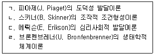
- ㄱ
- ㄹ
- ㄱ, ㄴ
- ㄱ, ㄷ
- ㄷ, ㄹ
(정답률: 알수없음)
4. 태내 발달에 관한 설명으로 옳은 것을 모두 고른 것은?
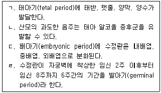
- ㄱ, ㄹ
- ㄴ, ㄷ
- ㄱ, ㄷ, ㄹ
- ㄴ, ㄷ, ㄹ
- ㄱ, ㄴ, ㄷ, ㄹ
(정답률: 알수없음)
5. 신생아에 관한 설명으로 옳지 않은 것은?
- 감각 중 시각은 비교적 덜 발달된 상태에서 태어난다.
- 손가락을 조절하여 물건을 잡을 수 있다.
- 어머니의 젖 냄새를 구분할 수 있다.
- 갑작스럽고 강렬한 소음에 모로반사(Moro reflex)를 보인다.
- 수면 중 약 50 %는 렘(REM) 수면이다.
(정답률: 알수없음)
6. 영유아기 정서발달에 관한 설명으로 옳은 것을 모두 고른 것은?
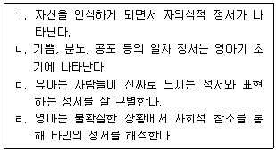
- ㄱ, ㄴ
- ㄴ, ㄷ
- ㄱ, ㄴ, ㄹ
- ㄱ, ㄷ, ㄹ
- ㄴ, ㄷ, ㄹ
(정답률: 알수없음)
7. 유아기의 발달 특징에 관한 설명으로 옳은 것을 모두 고른 것은?
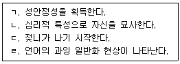
- ㄱ, ㄴ
- ㄱ, ㄹ
- ㄴ, ㄹ
- ㄷ, ㄹ
- ㄱ, ㄷ, ㄹ
(정답률: 알수없음)
8. 다음 사례에 나타난 기억 전략에 관한 설명으로 옳은 것을 모두 고른 것은?
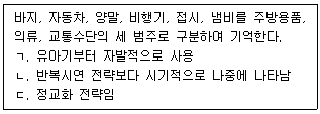
- ㄴ
- ㄱ, ㄴ
- ㄱ, ㄷ
- ㄴ, ㄷ
- ㄱ, ㄴ, ㄷ
(정답률: 0%)
9. 청소년기 자아중심성의 한 특징으로 엘킨드(D. Elkind)가 설명한 개념은?
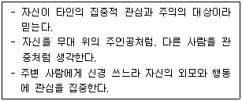
- 메타인지
- 개인적 우화
- 조합적 사고
- 상상적 청중
- 가설연역적 사고
(정답률: 알수없음)
10. 성인의 적응 방식을 방어기제 수준으로 설명한 베이런트(G. Vaillant)의 이론으로 옳지 않은 것은?
- 시련이나 위기에 직면한 개인이 나타내는 심리적 적응방식에서의 발달적 변화에 관심을 가졌다.
- 베이런트는 프로이트(S. Freud)의 방어기제 중에는 더 성숙한 방어기제도 있다고 간주한다.
- 방어기제 수준을 정신병적 방어기제, 신경증적 방어기제, 성숙한 방어기제의 3수준으로 구분한다.
- 개인생활과 직업생활에서 성공적인 사람들은 미성숙한 방어기제보다는 더 성숙한 방어기제를 사용하는 쪽으로 이동한다.
- 망상적 투사, 부정, 왜곡은 정신병적 방어기제의 대표적 유형이다.
(정답률: 알수없음)
11. 피아제(J. Piaget)의 형식적 조작기 이후 성인기 인지발달에 관한 학자들의 설명으로 옳은 것은?
- 아르린(P. Arlin): 지식의 습득단계에서 실생활에 적용하는 단계로 전환
- 리겔(K. Riegel): 형식적 사고가 아닌 변증법적 사고가 이루어지는 시기
- 라부비-비에(G. Labouvie-Vief): 성인기는 문제해결보다는 문제발견의 시기라고 간주
- 페리(W. Perry): 문제해결과정에서 논리적 사고보다는 실용적 사고를 하게 됨
- 샤이(K. Schaie): 이원론적 사고에서 벗어나 다원론적인 상대적 사고를 하게 됨
(정답률: 알수없음)
12. 언어발달에 관한 설명으로 옳지 않은 것은?
- 스키너(B. Skinner): 조작적 조건형성과정의 강화원리에 의해 언어발달이 이루어짐
- 반두라(A. Bandura): 관찰을 통한 모방에 의해 언어발달이 가능함
- 촘스키(N. Chomsky): 선천적으로 언어습득장치를 지니고 태어남
- 브루너(J. Bruner): 아동의 언어발달에 기여하는 부모 역할을 언어습득 지원체제라고 함
- 르네버그(E. Lenneberg): 문화권에 따라 언어발달 순서가 다르며 언어발달의 결정적 시기는 없음
(정답률: 알수없음)
13. 지능이론에 관한 설명으로 옳지 않은 것은?
- 길포드(J. Guilford)의 지력구조론: 지능은 기능×조작×산출의 세 차원으로 구성됨
- 서스톤(I. Thurstone)의 기초정신능력이론: 지능은 상호 독립적인 일곱 가지 하위요인으로 구성됨
- 카텔(R. Cattell)의 Gf-Gc이론: 결정적 지능(Gc)은 성인기에도 다양한 지적 자극을 통해 유지되거나 향상될 수 있음
- 스피어만(C. Spearman)의 이요인이론: 일반요인(g)은 모든 유형의 지적 활동에 관여하는 일반적 능력임
- 가드너(H. Gardner)의 다중지능이론: 지능은 문화권에 따라 다르게 정의될 수 있으며 각 하위지능들의 상대적 중요성은 동일함
(정답률: 알수없음)
14. 다음 설명에 해당하는 피아제(J. Piaget) 감각운동기의 하위단계는?
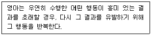
- 반사운동기
- 일차 순환반응기
- 이차 순환반응기
- 이차 순환반응의 협응기
- 삼차 순환반응기
(정답률: 알수없음)
15. DSM-5의 자폐스펙트럼장애의 진단 기준 및 설명으로 옳지 않은 것은?
- 사회적ㆍ정서적 상호작용에서 결함을 보인다.
- 제한적이고 반복적인 행동 양식과 흥미, 활동을 보인다.
- 여성과 남성의 발병 비율이 유사하다.
- 마음이론을 발달시키지 못해 다른 사람의 관점을 잘 이해하지 못한다.
- 조기발견과 개입을 하게 되면 자폐스펙트럼장애가 지적장애로 이어지는 비율을 감소시킬 수 있다.
(정답률: 40%)
16. 애착발달에 관한 설명으로 옳지 않은 것은?
- 볼비(J. Bowlby)는 애착형성을 본능적 반응의 결과로 설명한다.
- 분리불안은 영아가 애착 대상에게서 떨어질 때 나타나는 불안반응이다.
- 애착을 형성하기 위해서는 대상영속성이 획득되어야 한다.
- 할로우(H. Harlow)는 영아가 수유욕구를 충족시켜주는 사람과 애착을 형성한다고 보았다.
- 영아는 어머니 외에 다른 대상에게도 동시에 애착을 형성할 수 있다.
(정답률: 알수없음)
17. 프로이트(S. Freud)의 심리성적 발달이론에 관한 설명으로 옳지 않은 것은?
- 인간의 정신적 지각 수준인 무의식, 전의식, 의식의 세 영역 중 무의식 세계를 가장 중시한다.
- 방어기제를 습관적으로 반복 사용하는 것은 건강하지 못한 성격의 징표로 볼 수 있다.
- 다섯 단계로 이루어지는 성격발달단계는 누구든 차례대로 거치게 된다.
- 자아가 원초아의 세력을 조절하지 못해서 두려움을 느끼는 경우 도덕적 불안을 경험하게 된다.
- 인간의 모든 행동에는 그 원인이 있다는 심리적 결정론을 주장한다.
(정답률: 알수없음)
18. 셀먼(R. Selman)의 조망수용 발달단계 중 '가' 단계에 관한 설명으로 옳은 것은?
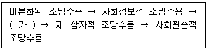
- 자신과 상대방의 입장에서 벗어나 제 삼자의 입장에서 자신과 상대방이 어떻게 보일지 상상할 수 있다.
- 자신의 생각, 감정, 행동을 다른 사람의 입장에서 볼 수 있으며, 다른 사람도 이렇게 할 수 있음을 알게 된다.
- 자신과 타인이 다른 생각과 감정을 가진다는 사실을 알지만 종종 혼동한다.
- 사람들이 다른 정보를 가지고 있으면 다른 조망을 가지게 된다고 생각한다.
- 제 삼자의 입장이 사회적 가치체계의 영향을 받을 수 있음을 이해한다.
(정답률: 알수없음)
19. 개인심리학을 주장한 아들러(A. Adler) 성격이론의 주요 개념으로 옳지 않은 것은?
- 생활양식
- 사회적 관심
- 허구적 최종목표
- 긍정심리자본과 성격강점
- 열등감 극복과 우월감 추구
(정답률: 알수없음)
20. A의 반응을 가장 잘 설명하는 공격성 발달이론은?
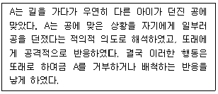
- 로렌즈(K. Lorenz)의 동물행동학적 이론
- 프로이트(S. Freud)의 정신분석이론
- 패터슨(G. Patterson)의 보상이론
- 반두라(A. Bandura)의 사회학습이론
- 닷지(K. Dodge)의 사회적 정보처리이론
(정답률: 알수없음)
21. 마샤(J. Marcia)의 이론에 근거하여, A와 B의 자아정체감 유형을 옳게 나열한 것은?
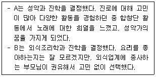
- A: 정체감 성취, B: 정체감 유실
- A: 정체감 유실, B: 정체감 성취
- A: 정체감 성취, B: 정체감 혼미
- A: 정체감 유실, B: 정체감 유예
- A: 정체감 혼미, B: 정체감 유실
(정답률: 알수없음)
22. 여성의 도덕성 발달에 관하여 다음과 같이 주장한 학자는?
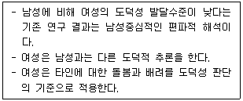
- 피아제(J. Piaget)
- 투리엘(E. Turiel)
- 길리건(C. Gilligan)
- 반두라(A. Bandura)
- 프로이트(S. Freud)
(정답률: 알수없음)
23. DSM-5의 주의력 결핍 및 과잉행동장애(ADHD) 중 과잉행동/충동 우세형에 관한 진술로 옳지 않은 것은?
- 진단을 위한 증상 9개 중 6개 이상이 최소 6개월 동안 발달수준에 적합하지 않아야 한다.
- 증상이 사회적ㆍ학업적 또는 직업적 기능의 질을 방해하거나 감소시킨다는 명확한 증거가 있다.
- 진단의 지표가 되는 증상 9개 중 몇 개는 2개 이상의 환경(가정, 학교, 대인관계 등)에서 나타난다.
- 진단의 지표가 되는 증상 9개 중 몇 개는 12세 이전에 나타난다.
- 학령전기의 주요 발현 양상은 부주의이지만, 초등학교 시기에는 과잉행동이 두드러진다.
(정답률: 알수없음)
24. DSM-5의 불안장애에 해당하지 않는 것은?
- 선택적 함구증
- 광장공포증
- 특정공포증
- 공황장애
- 파괴적 기분조절부전장애
(정답률: 알수없음)
25. 영아기 대근육 운동발달을 순서대로 옳게 나열한 것은?
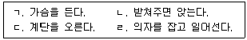
- ㄱ - ㄴ - ㄹ – ㄷ
- ㄴ - ㄱ - ㄷ – ㄹ
- ㄴ - ㄱ - ㄹ - ㄷ
- ㄷ - ㄹ - ㄱ – ㄴ
- ㄹ - ㄴ - ㄱ - ㄷ
(정답률: 알수없음)
2과목: 집단상담의 기초
26. 집단상담자의 윤리적 행동에 관한 설명으로 옳은 것을 모두 고른 것은?
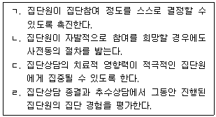
- ㄱ, ㄴ
- ㄱ, ㄹ
- ㄱ, ㄴ, ㄹ
- ㄴ, ㄷ, ㄹ
- ㄱ, ㄴ, ㄷ, ㄹ
(정답률: 알수없음)
27. 구조화 집단상담 계획에 관한 내용으로 옳지 않은 것은?
- 집단의 발달단계를 고려하여 계획한다.
- 회기별 계획을 세울 때에는 주제와 활동 외에 소요시간도 결정한다.
- 집단원의 특성을 고려하여 집단상담을 계획한다.
- 집단상담 과정 중에 참여를 하지 않거나 지각 혹은 탈락한 집단원을 위한 계획도 수립한다.
- 회기 내에 진행되는 세부 활동의 시간을 모두 동일하게 배분한다.
(정답률: 알수없음)
28. 다음에 나타난 집단상담자의 반응으로 옳은 것은?
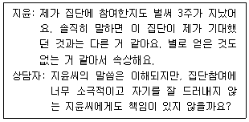
- 자기돌봄
- 폐쇄적 반응
- 방어적 반응
- 모범보이기
- 용기
(정답률: 20%)
29. 집단상담의 이론과 기법의 연결이 옳지 않은 것은?
- 해결중심-예외질문, 척도질문
- 실존주의-역설적 의도, 탈숙고
- 교류분석-게임분석, 각본분석
- 행동주의-자극통제, 행동조성
- 심리극-거울기법, 대사역할
(정답률: 알수없음)
30. 게슈탈트 집단상담에 관한 설명으로 옳은 것은?
- 개인화는 권위있는 사람의 행동이나 가치관을 무비판적으로 받아들이는 현상이다.
- 접촉경계는 집단원들 간의 경계를 의미한다.
- 전경과 배경의 교체가 방해를 받을 때, 게슈탈트가 형성된다.
- 투사는 자신의 요구 또는 감정을 자각하는 것이 두려워 책임을 타인에게 돌리는 현상이다.
- 반전은 자신의 요구를 인식하지만 겉으로 나타내지 못하고 안으로 억압하는 상태이다.
(정답률: 알수없음)
31. 이야기치료에 관한 설명으로 옳은 것을 모두 고른 것은?
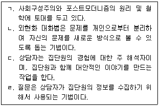
- ㄱ, ㄴ
- ㄷ, ㄹ
- ㄱ, ㄴ, ㄹ
- ㄴ, ㄷ, ㄹ
- ㄱ, ㄴ, ㄷ, ㄹ
(정답률: 알수없음)
32. 개인심리학 집단상담 발달단계에 관한 설명으로 옳지 않은 것은?
- 분석ㆍ사정 단계에서는 집단원의 부적절한 생활양식을 파악하고 집단원의 신념, 감정, 동기, 목표를 이해한다.
- 상담관계형성 단계에서는 집단원에 대한 정보를 얻기 위해 생애사 질문지를 활용한다.
- 해석ㆍ통찰 단계에서는 상담자는 집단원의 진술에 대한 해석을 통해 집단원의 자각과 통찰을 돕는다.
- 상담관계형성 단계에서는 상담자와 집단원은 우호적이며 대등한 관계가 형성되어야 한다.
- 재정향 단계에서는 집단원의 비효율적인 신념과 행동에 대한 대안을 선택하여 변화를 추구한다.
(정답률: 알수없음)
33. 정신분석 집단상담에 참여한 철수의 행동을 설명하는 용어로 옳은 것은?
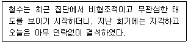
- 억압
- 퇴행
- 전치
- 저항
- 부인
(정답률: 알수없음)
34. 집단원의 권리에 관한 내용으로 옳은 것을 모두 고른 것은?
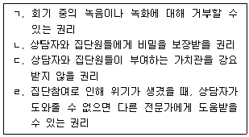
- ㄱ, ㄴ
- ㄷ, ㄹ
- ㄱ, ㄴ, ㄷ
- ㄴ, ㄷ, ㄹ
- ㄱ, ㄴ, ㄷ, ㄹ
(정답률: 알수없음)
35. 인간중심 집단상담의 내용으로 옳은 것을 모두 고른 것은?
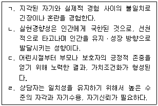
- ㄱ, ㄴ
- ㄷ, ㄹ
- ㄱ, ㄷ, ㄹ
- ㄴ, ㄷ, ㄹ
- ㄱ, ㄴ, ㄷ, ㄹ
(정답률: 20%)
36. 코리(G. Corey)의 집단상담자의 인간적 특성에 관한 내용으로 옳은 것은?
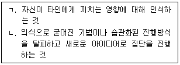
- ㄱ: 공감, ㄴ: 정체성
- ㄱ: 개인적 힘, ㄴ: 창의성
- ㄱ: 함께 함, ㄴ: 창의성
- ㄱ: 정체성, ㄴ: 개인적 힘
- ㄱ: 정체성, ㄴ: 창의성
(정답률: 알수없음)
37. 집단상담 이론과 목표에 관한 설명으로 옳지 않은 것은?
- 정신분석: 과거의 경험을 분석ㆍ해석하고 무의식적 수준에서 작동하는 심리적 역동에 대해 통찰하도록 한다.
- 개인심리학: 격려를 통해 집단원들에게 용기를 북돋아 주고 사회적 관심을 갖게 하고, 생활양식을 수정하도록 한다.
- 현실치료: 스스로 책임지고 선택한 방법으로 각자의 심리적 욕구를 충족할 수 있도록 한다.
- 인간중심이론: 서로 다른 자아 상태를 학습하고 현실에 가장 적절한 자아 상태를 작동하는 방법을 모색하게 한다.
- 합리적 정서행동치료: 비합리적 신념을 변화시킴으로써 부정적인 감정을 완화시킨다.
(정답률: 알수없음)
38. 집단유형에 관한 설명으로 옳지 않은 것은?
- 성장집단은 자신의 잠재력 개발에 관심 있는 사람들로 구성된다.
- 치료집단은 참만남집단, 감수성집단이 대표적이다.
- 과업집단은 특정과업을 완수하기 위한 목적으로 구성된다.
- 교육집단의 상담자는 집단원의 학습효과를 극대화하기 위해 교육자와 촉진자의 역할을 동시에 수행한다.
- 지지집단은 공통적인 관심사가 있는 집단원들로 구성되어 특정문제와 관심사에 대해 공유한다.
(정답률: 알수없음)
39. 집단상담 초기단계에 상담자가 수행해야 할 과업으로 옳지 않은 것은?
- 집단구조화
- 집단규칙 설명
- 집단원의 참여 촉진
- 문제해결을 위한 과제부과
- 집단원의 적절한 자기개방 촉진
(정답률: 알수없음)
40. 얄롬(I. Yalom)이 제시한 치료적 요인으로 옳은 것을 모두 고른 것은?
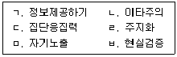
- ㄱ, ㅂ
- ㄴ, ㄷ
- ㄱ, ㄴ, ㄷ
- ㄱ, ㄴ, ㄷ, ㅁ
- ㄱ, ㄴ, ㄹ, ㅁ, ㅂ
(정답률: 알수없음)
41. 문제행동을 보이는 집단원이 있을 때 상담자의 개입전략으로 옳지 않은 것은?
- 집단원과 집단의 진행과정에 대해 솔직하게 이야기를 나눈다.
- 문제행동을 보이는 집단원의 인격을 폄하하지 않는다.
- 갈등을 회피하지 않고 탐색할 수 있는 방법을 찾는다.
- 방어하는 행동을 멈추도록 강요하지 않는다.
- 관찰한 사실이나 느낀 것을 권위적인 태도로 말한다.
(정답률: 알수없음)
42. 비행청소년 집단상담에 관한 설명으로 옳지 않은 것은?
- 초기단계에서 집단원은 집단과 상담자에 대한 신뢰감이 낮고 무반응을 보이는 경우가 많다.
- 집단상담의 목표가 구체적이어서 집단원의 집단에 대한 적응이 빠르게 이루어진다.
- 상담자는 집단응집력을 높이기 위한 활동을 도입한다.
- 필요한 경우, 상담자는 집단원의 왜곡된 사고나 감정의 불일치를 알아차릴 수 있도록 직면을 사용한다.
- 상담자는 집단원 스스로 대안을 찾을 수 있도록 격려한다.
(정답률: 알수없음)
43. 집단 성장에 부정적인 영향을 미치는 집단역동 관련 요인으로 옳은 것은?
- 집단원의 참여가 광범위하게 이루어지는 집단
- 지금-여기에 초점이 맞추어진 의사소통
- 명성이나 능력에 따라 형성된 비공식적 하위집단
- 집단의 강한 응집력
- 적절한 내용의 제안을 자유롭게 하는 집단원
(정답률: 알수없음)
44. 청소년집단 상담자가 갖추어야 할 전문성에 관한 설명으로 옳지 않은 것은?
- 자발적인 집단과 비자발적인 집단의 특성을 이해한다.
- 청소년들이 성장하면서 경험하게 되는 갈등의 종류들을 이해해야 한다.
- 집단상담의 집중도를 높일 수 있도록 게임이나 활동을 활용한다.
- 비자발적인 청소년집단의 경우, 초기 회기 동안 집단원이 부정적인 감정이나 행동을 표현할 수 있도록 허락한다.
- 주도권을 잡으려는 집단원에게 집단을 이끌게 한다.
(정답률: 알수없음)
45. 청소년집단 상담자가 '차단하기' 기술을 사용해야 할 상황으로 옳지 않은 것은?
- 집단의 주제를 벗어나는 이야기가 계속될 때
- 집단원 간에 논쟁이 생겼을 때
- 회기가 끝나가는 시점에 새로운 문제를 꺼낼 때
- 발언권을 가진 집단원이 횡설수설하고 있을 때
- 집단원이 집단과 다른 집단원에 대해 부정적인 피드백을 할 때
(정답률: 알수없음)
46. 회기를 시작할 때 사용할 수 있는 집단상담자의 진술로 옳은 것은?
- “집단에 오기 전에 어떤 생각이 들었는지 잠시 이야기 나눠 볼까요?”
- “여러분 중에는 오늘 우리가 나눈 이야기에 동의하지 않는 사람도 있을 겁니다. 그렇지만 서로의 생각을 나누는 것도 중요해요.”
- “다음 회기에 어떤 결과가 나타날지 기대가 되는군요.”
- “오늘 집단을 통해 무엇을 얻으셨나요?"
- “여러분이 어떤 목표를 가지고 일주일을 보낼 것인가에 대해 이야기를 나눠 봅시다.”
(정답률: 알수없음)
47. 집단상담 평가에 관한 설명으로 옳지 않은 것은?
- 집단원의 태도, 문제행동, 집단에서의 역할 등을 평가한다.
- 면접, 관찰, 토의, 심리검사 등을 활용한다.
- 집단상담 평가는 집단원 평가, 상담자 평가, 프로그램 평가, 기관 평가로 구분한다.
- 평가결과는 집단상담의 내용과 방법에 대한 수정 및 보완에 활용된다.
- 추수평가에서는 집단이 종결된 후, 일부 집단원을 불러 모아 변화가 지속되고 있는지를 확인한다.
(정답률: 30%)
48. 학교집단상담의 특성에 관한 설명으로 옳은 것을 모두 고른 것은?
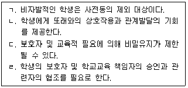
- ㄱ, ㄴ
- ㄷ, ㄹ
- ㄱ, ㄴ, ㄹ
- ㄴ, ㄷ, ㄹ
- ㄱ, ㄴ, ㄷ, ㄹ
(정답률: 알수없음)
49. 다음의 특성들이 공통으로 드러나는 집단 발달단계에서의 상담자 역할로 옳은 것은?
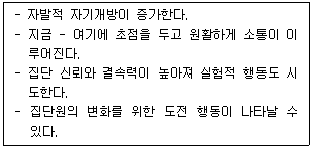
- 집단참여에 대한 기대와 불안을 다룬다.
- 집단원에게 집단목표와 진행절차를 설명한다.
- 집단규범을 명시적 혹은 암시적으로 제시한다.
- 집단원이 깊은 수준의 자기탐색을 할 수 있도록 돕는다.
- 추수상담 일정을 결정한다.
(정답률: 알수없음)
50. 학교 밖 청소년 집단상담에서 다음에 사용된 상담기술은?
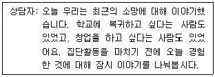
- 요약
- 명료화
- 반영
- 직면
- 재구조화
(정답률: 알수없음)
3과목: 심리측정 및 평가
51. 심리측정과 심리검사에 관한 설명으로 옳지 않은 것은?
- 심리적 속성은 직접적으로 측정할 수 없다.
- 심리검사는 개인의 특성을 이해하는 데 도움을 줄 수 있다.
- 타당도와 신뢰도가 높은 심리검사는 오차가 없다.
- 심리적 구성개념을 측정하는 방법은 다양할 수 있다.
- 표준화 검사와 비표준화 검사가 있다.
(정답률: 알수없음)
52. 준거참조검사(criterion-referenced test)에 관한 설명으로 옳지 않은 것을 모두 고른 것은?
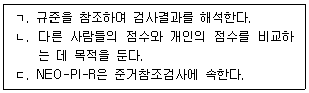
- ㄱ
- ㄱ, ㄴ
- ㄱ, ㄷ
- ㄴ, ㄷ
- ㄱ, ㄴ, ㄷ
(정답률: 20%)
53. 척도에 관한 설명으로 옳은 것을 모두 고른 것은?
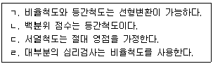
- ㄱ
- ㄱ, ㄴ
- ㄷ, ㄹ
- ㄴ, ㄷ, ㄹ
- ㄱ, ㄴ, ㄷ, ㄹ
(정답률: 알수없음)
54. 규준 점수에 관한 설명으로 옳은 것은?
- Z점수는 2.5보다 큰 값이 나올 수 없다.
- Z점수를 알면 T점수를 계산할 수 있다.
- Z점수는 음의 값이 나올 수 없다.
- T점수 계산 공식은 검사 유형에 따라 달라진다.
- 스테나인 점수는 정상분포상 점수 9에 가장 많은 사례가 위치한다.
(정답률: 알수없음)
55. 신뢰도에 관한 설명으로 옳지 않은 것은?
- 신뢰도는 검사측정치가 얼마나 일관적인가를 의미한다.
- 신뢰도는 문항 수의 영향을 받는다.
- 관찰자간 신뢰도는 관찰 결과가 관찰자들 사이에서 얼마나 유사한가를 의미한다.
- 타당도가 낮으면서 신뢰도가 높은 검사는 존재할 수 없다.
- 검사-재검사 신뢰도는 검사 실시 간격에 따라 신뢰도 계수가 다르게 추정될 수 있다.
(정답률: 알수없음)
56. 타당도에 관한 설명으로 옳은 것은?
- 구인타당도 검증을 위해 요인분석을 사용할 수 있다.
- 내용타당도는 수검자의 평가를 통해 판단된다.
- 구인타당도는 검사 결과가 처치에 어떤 변화를 일으키는지 알아보기 위한 타당도이다.
- 안면타당도는 준거타당도에 속한다.
- 구인타당도가 높으면 안면타당도는 높아진다.
(정답률: 40%)
57. 문항분석에 관한 설명으로 옳은 것은?
- '문항의 난이도가 높다'는 의미는 검사에서 높은 점수를 받은 사람과 낮은 점수를 받은 사람을 잘 구분한다는 것이다.
- 검사 점수들의 변산도(variability)는 문항의 난이도가 .70일 때 최댓값이 된다.
- 문항의 변별력이 높으면 검사의 신뢰도는 낮아진다.
- 상하부 지수(upper-lower index, ULI)에 따른 문항변별도에서 0의 값이 나올 수 있다.
- 문항난이도(item difficulty)의 범위는 -1부터 1까지이다.
(정답률: 알수없음)
58. 통계에 관한 설명으로 옳지 않은 것은?
- 표본(sample)은 전집의 하위집단이다.
- 최빈치(mode)는 분포 내에서 가장 빈도가 높은 점수이다.
- Pearson 상관계수(r)의 범위는 0부터 1까지이다.
- 변인(variable)은 연구자가 관심을 가지는 연구대상의 속성을 의미한다.
- 모수치(parameter)는 전집의 수량적 특성을 의미한다.
(정답률: 알수없음)
59. 심리검사 개발에 관한 설명으로 옳지 않은 것은?
- 검사 개발의 목적에 따라 검사 개발 절차와 내용이 결정된다.
- 예비검사의 대상은 그 검사를 실제 사용할 모집단의 성격을 잘 대표할 수 있도록 구성한다.
- 검사 개발의 첫 단계는 규준의 작성과 양호도를 분석하는 것이다.
- 심리검사에서 우수한 문항은 불필요한 정보를 담고 있지 않다.
- 진위형 문항(true/false item)은 사실적 정보에 대한 지식을 평가하는 데 유용하다.
(정답률: 알수없음)
60. 분석적 능력, 창의적 능력, 실제적 능력에 기초한 성공지능(successful intelligence)을 주장한 학자는?
- 카텔(R. Cattell)
- 길포드(J. Guilford)
- 가드너(H. Gardner)
- 스턴버그(R. Sternberg)
- 스피어만(C. Spearman)
(정답률: 알수없음)
61. 홀랜드(J. Holland)의 직업적 성격유형 중 대표적인 직업이 '교육자, 상담가'에 해당하는 것은?
- 기업적 유형(Enterprising type)
- 관습적 유형(Conventional type)
- 현실적 유형(Realistic type)
- 사회적 유형(Social type)
- 탐구적 유형(Investigative type)
(정답률: 알수없음)
62. K-WISC-Ⅳ에 관한 설명으로 옳은 것은?
- 10개의 주요 소검사와 15개의 보충 소검사로 구성되었다.
- 언어이해 지표와 지각추론 지표의 합산점수는 인지효율성 지표 점수로 산출된다.
- 환산점수는 각 소검사의 원점수 총점을 평균 10, 표준편차 7로 변환해서 산출한 표준점수이다.
- 토막짜기는 작업기억 지표의 주요 소검사이다.
- 처리점수(process scores)는 다른 소검사 점수로 대체할 수 없다.
(정답률: 알수없음)
63. 다음에 해당하는 행동 기록 방법은?
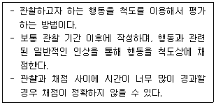
- 평정 기록
- 간격 기록
- 사건 기록
- 이야기 기록
- 시간표집 기록
(정답률: 알수없음)
64. 심리검사를 선정하고 시행하는 과정에서 고려해야 할 사항으로 옳은 것을 모두 고른 것은?
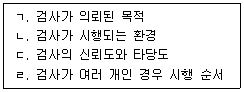
- ㄱ, ㄴ, ㄷ
- ㄱ, ㄴ, ㄹ
- ㄱ, ㄷ, ㄹ
- ㄴ, ㄷ, ㄹ
- ㄱ, ㄴ, ㄷ, ㄹ
(정답률: 알수없음)
65. 일반적인 심리검사 윤리에 관한 설명으로 옳지 않은 것은?
- 검사가 필요한 이유를 설명하고 수검자의 사전 동의를 얻는다.
- 윤리적 딜레마가 생길 경우, 검사자의 권리를 최우선으로 고려한다.
- 검사재료를 안전하게 보관하고 자격 없는 사람이 접근하지 못하도록 한다.
- 검사를 통해 얻은 개인정보는 사용이 제한되고 지정된 목적을 위해 사용되어야 한다.
- 검사 매뉴얼에 맞게 검사를 실시한 후 채점하고 해석한다.
(정답률: 알수없음)
66. MMPI-2에는 포함되지 않으면서 청소년용으로 개발된 MMPI-A 척도는?
- A
- IMM
- APS
- INTR
- DISC
(정답률: 알수없음)
67. MMPI-2의 보충척도가 아닌 것은?
- R
- Es
- Do
- PK
- ANX
(정답률: 알수없음)
68. 다음 사례를 가장 잘 반영하는 MMPI-2 척도는?
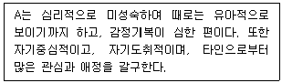
- Hs
- Hy
- Pa
- Pt
- Ma
(정답률: 알수없음)
69. '인식된 정보를 가지고 판단을 내릴 때 쓰는 기능'을 반영하는 MBTI의 선호지표는?
- 외향성-내향성
- 감각형 –직관형
- 사고형-감정형
- 판단형-인식형
- 자극추구-위험회피
(정답률: 알수없음)
70. 다음에 해당하는 NEO-PI-R의 척도는?
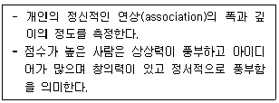
- 신경증(N)
- 외향성(E)
- 개방성(O)
- 친화성(A)
- 성실성(C)
(정답률: 40%)
71. 투사적 검사의 일반적인 특성에 관한 설명으로 옳은 것은?
- 채점 및 해석이 비교적 용이하다.
- 의도적으로 반응을 왜곡할 수 있다.
- 신뢰도와 타당도가 잘 확립되어 있다.
- 규준을 통한 개인 간 비교가 가능하다.
- 자유롭고 풍부한 반응을 하는 것이 가능하다.
(정답률: 알수없음)
72. HTP검사 실시방법에 관한 설명으로 옳지 않은 것은?
- 지우개 사용을 허용한다.
- 종이는 모두 세로로 제시한다.
- 그림 단계가 끝난 후 질문 단계를 진행한다.
- 그림을 그리는 데 제한 시간은 없지만 소요 시간은 측정한다.
- 사람 그림의 경우, 특정 성(性)의 그림을 먼저 그리라는 지시를 하지 않는다.
(정답률: 알수없음)
73. 문장완성검사에 관한 설명으로 옳지 않은 것은?
- 집단 대상으로는 실시가 불가능하다.
- 단어연상 검사의 변형으로 발전되었다.
- 투사적 검사로 보기 어렵다는 견해도 있다.
- 미완성 문장을 수검자가 자기 생각대로 완성하도록 하는 검사이다.
- 문장의 전반적인 흐름과 미묘한 뉘앙스를 통해 수검자의 성격 패턴을 도출할 수 있다.
(정답률: 알수없음)
74. 로샤(Rorschach)검사에서 반응 영역 기호로 옳지 않은 것은?
- W
- D
- S
- H
- Dd
(정답률: 알수없음)
75. TAT에 관한 설명으로 옳은 것을 모두 고른 것은?
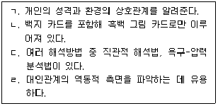
- ㄱ, ㄴ, ㄷ
- ㄱ, ㄴ, ㄹ
- ㄱ, ㄷ, ㄹ
- ㄴ, ㄷ, ㄹ
- ㄱ, ㄴ, ㄷ, ㄹ
(정답률: 알수없음)
4과목: 상담이론
76. 해결중심상담에서 사용하는 질문기법 중 다음에 해당하는 것은?
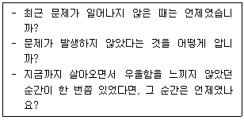
- 기적질문
- 대처질문
- 척도질문
- 예외질문
- 관계성질문
(정답률: 알수없음)
77. 현실치료에 관한 설명으로 옳지 않은 것은?
- 선택이론에 근거하고 있다.
- 좋은 세계는 개인의 욕구와 소망이 충족되는 세계이다.
- 인간은 기본적으로 생존, 사랑과 소속, 존중, 힘, 자유의 욕구가 있다.
- 전행동(total behavior)의 '생각하기'에는 공상과 꿈이 포함된다.
- 좋은 세계 안에는 우리에게 중요한 것과 가장 원하는 것이 반영되어 있으며 도덕적 기반은 존재하지 않는다.
(정답률: 20%)
78. 중간신념과 자동적 사고에 관한 설명으로 옳지 않은 것은?
- 중간신념은 핵심신념으로부터 나온 것이다.
- 자동적 사고는 매우 빠르게 의식 속을 지나간다.
- 중간신념은 삶에 대한 태도, 규범, 기대 등으로 구성된다.
- 자동적 사고는 핵심신념과 중간신념을 매개한다.
- 자동적 사고는 사실인 것처럼 무비판적으로 받아들이게 된다.
(정답률: 알수없음)
79. 인지치료에서 사용하는 질문기법 중 다음에 해당하는 것은?
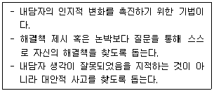
- 왜-질문(why-question)
- 폐쇄형 질문
- 양자택일형 질문
- 소크라테스식 질문
- 수렴적 개방형 질문
(정답률: 알수없음)
80. 두 개 이상의 치료 이론을 토대로 각 이론의 기법들을 종합하여 개념적 틀을 만드는 통합적 접근은?
- 기술적 통합
- 이중적 통합
- 동화적 통합
- 이론적 통합
- 공통요인적 접근
(정답률: 40%)
81. 다문화상담자가 갖추어야 할 역량으로 옳은 것을 모두 고른 것은?
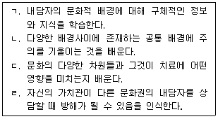
- ㄱ, ㄴ
- ㄴ, ㄷ
- ㄷ, ㄹ
- ㄱ, ㄷ, ㄹ
- ㄱ, ㄴ, ㄷ, ㄹ
(정답률: 알수없음)
82. 여성주의 상담의 목표에 해당하는 것을 모두 고른 것은?
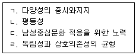
- ㄱ, ㄴ
- ㄷ, ㄹ
- ㄱ, ㄴ, ㄹ
- ㄴ, ㄷ, ㄹ
- ㄱ, ㄴ, ㄷ, ㄹ
(정답률: 알수없음)
83. 상담구조화의 내용으로 옳지 않은 것은?
- 상담시간 안내, 취소 및 연기가 필요할 때의 방법
- 비밀보장의 원칙
- 상담자의 역할
- 내담자의 역할
- 상담자의 전문성 정도
(정답률: 알수없음)
84. 상담의 종결에 관한 설명으로 옳지 않은 것은?
- 상담의 목표달성 여부를 점검한다.
- 내담자가 먼저 종결을 제안하는 경우는 없다.
- 종결에 따른 이별 감정을 다룬다.
- 문제의 재발방지방안에 대해 다룬다.
- 추수상담 일정에 대해 논의한다.
(정답률: 알수없음)
85. 다음 청소년내담자의 이야기에서 찾아볼 수 있는 인지적 특징에 관한 설명으로 옳지 않은 것은?
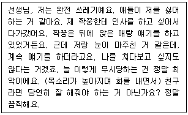
- 경직된 사고
- 당위론적 사고
- 높은 좌절인내력(high frustration tolerance)
- 독심술(mind-reading)
- 잘못된 명명(mislabelling)
(정답률: 알수없음)
86. 상담목표 설정의 고려사항으로 옳은 것을 모두 고른 것은?
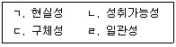
- ㄱ, ㄴ
- ㄴ, ㄷ
- ㄷ, ㄹ
- ㄱ, ㄴ, ㄷ
- ㄱ, ㄴ, ㄷ, ㄹ
(정답률: 알수없음)
87. 교류분석이론의 라켓에 관한 설명으로 옳은 것을 모두 고른 것은?
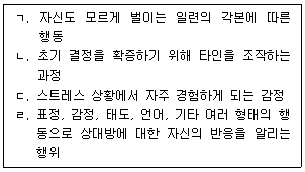
- ㄱ, ㄹ
- ㄴ, ㄷ
- ㄷ, ㄹ
- ㄱ, ㄴ, ㄷ
- ㄱ, ㄴ, ㄷ, ㄹ
(정답률: 알수없음)
88. 다음에서 상담자가 활용하고 있는 상담기술은?
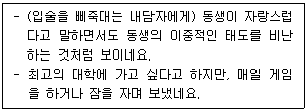
- 해석
- 요약
- 직면
- 공감
- 경청
(정답률: 알수없음)
89. 상담자의 윤리로 옳지 않은 것을 모두 고른 것은?
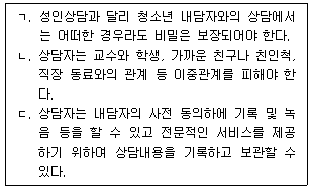
- ㄱ
- ㄴ
- ㄱ, ㄴ
- ㄴ, ㄷ
- ㄱ, ㄴ, ㄷ
(정답률: 알수없음)
90. 다음 사례에서 A가 사용한 방어기제는?
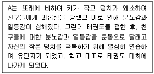
- 투사
- 동일시
- 퇴행
- 승화
- 반동형성
(정답률: 알수없음)
91. 상담에 관한 설명으로 옳은 것을 모두 고른 것은?
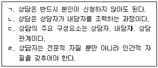
- ㄱ, ㄴ
- ㄷ, ㄹ
- ㄱ, ㄴ, ㄹ
- ㄴ, ㄷ, ㄹ
- ㄱ, ㄴ, ㄷ, ㄹ
(정답률: 알수없음)
92. 다음 사례에 부합하는 상담의 기본원리로 옳은 것은?
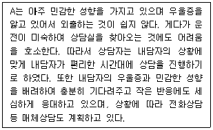
- 비밀보장의 원리
- 개별화의 원리
- 자기결정의 원리
- 무비판적 태도의 원리
- 의도적 감정표현의 원리
(정답률: 알수없음)
93. 상담자가 갖추어야 할 전문적 자질로 옳지 않은 것은?
- 상담자의 윤리
- 상담기법의 활용
- 상담이론에 대한 이해
- 완벽을 지향하는 태도
- 심리검사의 이해
(정답률: 알수없음)
94. 다음 사례에 해당하는 아들러(A. Adler)의 개인심리학적 상담기법은?
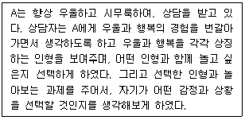
- 수프에 침 뱉기
- 가족구도 분석
- 우월성 추구
- 단추 누르기
- 마치 ∼처럼 행동하기
(정답률: 40%)
95. 행동주의 상담기법으로 옳은 것을 모두 고른 것은?
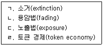
- ㄱ, ㄴ
- ㄷ, ㄹ
- ㄱ, ㄷ, ㄹ
- ㄴ, ㄷ, ㄹ
- ㄱ, ㄴ, ㄷ, ㄹ
(정답률: 알수없음)
96. 엘리스(A. Ellis)의 비합리적 사고와 합리적 사고의 변별기준으로 옳은 것을 모두 고른 것은?
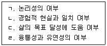
- ㄱ, ㄴ
- ㄴ, ㄷ
- ㄷ, ㄹ
- ㄴ, ㄷ, ㄹ
- ㄱ, ㄴ, ㄷ, ㄹ
(정답률: 알수없음)
97. 인간중심상담이 효과적으로 진행될 때, 내담자에게 나타나는 변화로 옳지 않은 것은?
- 자기자각 증가
- 자기수용 증가
- 자기표현 증가
- 자기개방 증가
- 자기방어 증가
(정답률: 알수없음)
98. 다음에 해당하는 게슈탈트 치료의 개념과 용어를 옳게 연결한 것은?
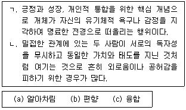
- ㄱ - a, ㄴ – b
- ㄱ - a, ㄴ – c
- ㄱ - b, ㄴ - a
- ㄱ - b, ㄴ – c
- ㄱ - c, ㄴ - b
(정답률: 20%)
99. 실존치료에서 실존적 불안의 조건으로 옳지 않은 것은?
- 죽음
- 고립(고독)
- 무의식
- 무의미
- 자유와 책임
(정답률: 알수없음)
100. 인간중심상담의 개념과 용어를 옳게 연결한 것은?
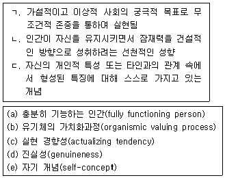
- ㄱ - a, ㄴ - b, ㄷ – c
- ㄱ - a, ㄴ - c, ㄷ – e
- ㄱ - b, ㄴ - c, ㄷ - a
- ㄱ - b, ㄴ - d, ㄷ – e
- ㄱ - c, ㄴ - d, ㄷ – a
(정답률: 알수없음)